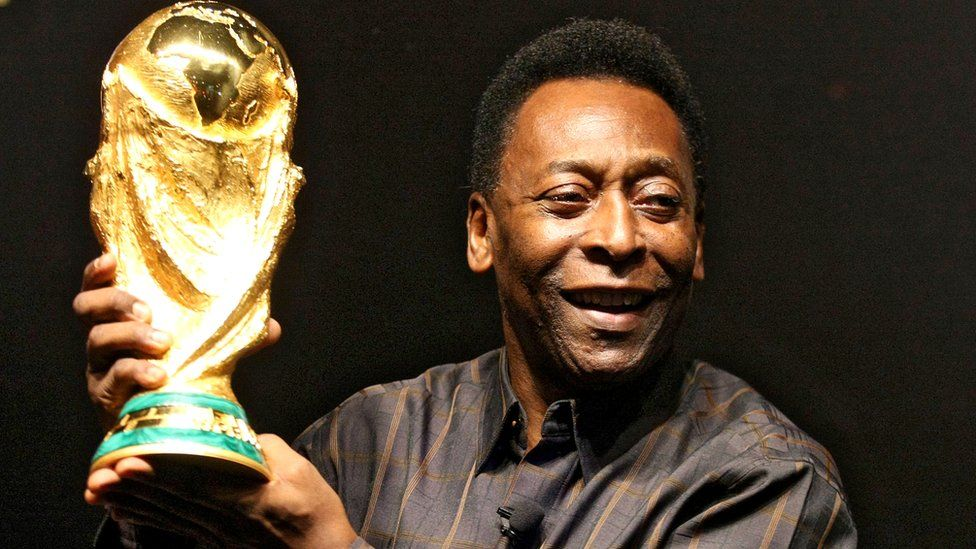

football was made at November 6, 1869 now we will talk about pele Pelé (born October 23, 1940, Três Corações, Brazil—died December 29, 2022, São Paulo, Brazil) was a Brazilian football (soccer) player, in his time probably the most famous and possibly the best-paid athlete in the world. He was part of the Brazilian national teams that won three World Cup championships (1958, 1962, and 1970).

diego Maradona was an Argentine professional football player who played as an attacking midfielder and football manager.
roberto carlos was an Brazilian professional football player who played as an attacking midfielder .